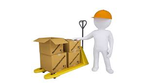

realizando nueva practica para ejecutar los comandos de commit y add


La logística son todas las operaciones llevadas a cabo para hacer posible que un producto llegue al consumidor desde el lugar donde se obtienen las materias primas, pasando por el lugar de su producción.
aprendiendo a simular con otros equipos de trabajo
Producción: la manufacturación se ha descentralizado de los centros de producción y hoy en día son muchos los procesos de fabricación de baja complejidad que se realizan en un almacén. De hecho, la logística es la encargada de coordinar fases como el montaje de kits o el paso del producto por estaciones de valor añadido.
